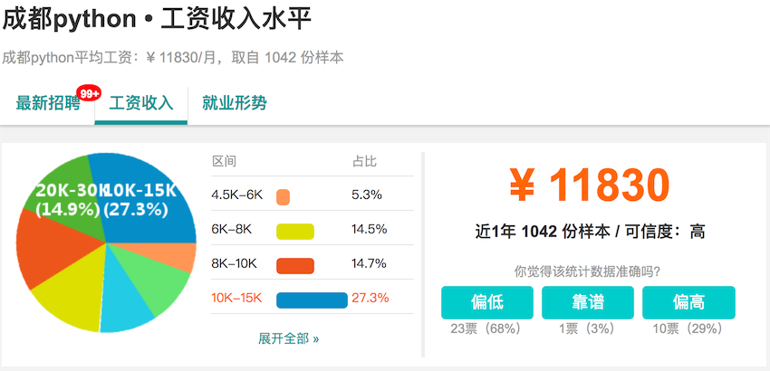
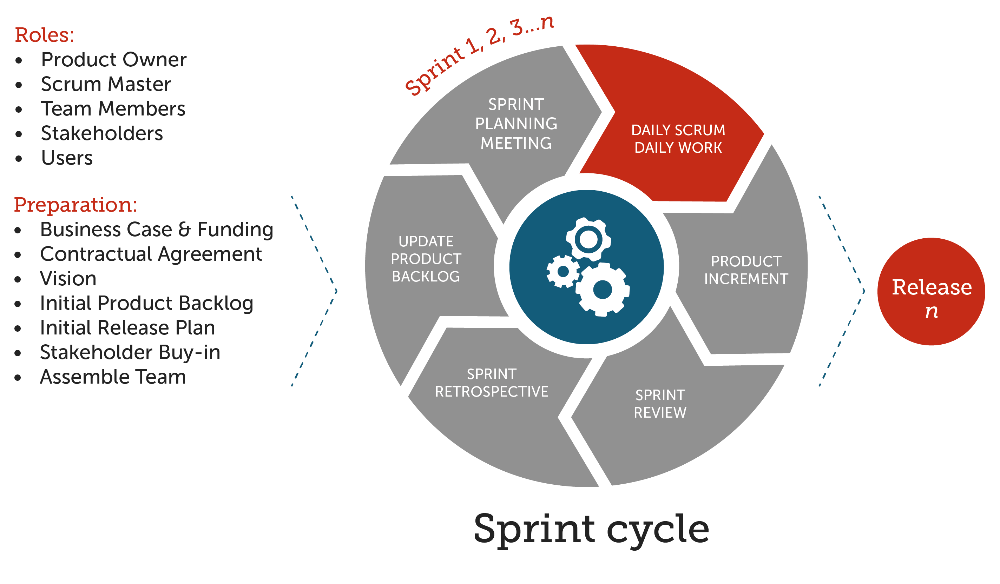

Index
Python - 100天从新手到大师
作者：骆昊
说明：最近有很多想学习Python的小伙伴申请单独加我微信和QQ，因为我自己平时也很忙，没办法一一解答大家的问题，我创建了Python100天学习交流5群（之前的两个2000人群1群和2群、两个1000人群3群和4群已经全部满员），群号为818146347，二维码在下方。我的同事和朋友很多也在这个群里，他们都是优秀的Python开发者，有丰富的商业项目经验，我们在时间充足的时候会及时解答大家的问题，而且从Python语言入门到Web应用开发，从数据分析到机器学习，每个领域都有技术大咖为大家解惑答疑。以后我们争取每周做一次视频直播，以专题的形式分享Python开发的点点滴滴，同时还会不定期的举办线上和线下的技术交流和分享活动，小伙伴们可以加群进行交流。感谢千锋教育Python教学部对本群的支持。
Python应用领域和就业形势分析
简单的说，Python是一个“优雅”、“明确”、“简单”的编程语言。
- 学习曲线低，非专业人士也能上手
- 开源系统，拥有强大的生态圈
- 解释型语言，完美的平台可移植性
- 支持面向对象和函数式编程
- 能够通过调用C/C++代码扩展功能
- 代码规范程度高，可读性强
目前几个比较流行的领域，Python都有用武之地。
- 云基础设施 - Python / Java / Go
- DevOps - Python / Shell / Ruby / Go
- 网络爬虫 - Python / PHP / C++
- 数据分析挖掘 - Python / R / Scala / Matlab
- 机器学习 - Python / R / Java / Lisp
作为一名Python开发者，主要的就业领域包括：
- Python服务器后台开发 / 游戏服务器开发 / 数据接口开发工程师
- Python自动化运维工程师
- Python数据分析 / 数据可视化 / 大数据工程师
- Python爬虫工程师
- Python聊天机器人开发 / 图像识别和视觉算法 / 深度学习工程师
下图显示了主要城市Python招聘需求量及薪资待遇排行榜（截止到2018年5月）。

给初学者的几个建议：
- Make English as your working language.
- Practice makes perfect.
- All experience comes from mistakes.
- Don't be one of the leeches.
- Either stand out or kicked out.
Day01~15 - Python语言基础
Day01 - 初识Python
- Python简介 - Python的历史 / Python的优缺点 / Python的应用领域
- 搭建编程环境 - Windows环境 / Linux环境 / MacOS环境
- 从终端运行Python程序 - DOS命令 / Hello, world / print函数 / 运行程序
- 使用IDLE - 交互式环境(REPL) / 编写多行代码 / 运行程序 / 退出IDLE
- 注释 - 注释的作用 / 单行注释 / 多行注释
Day02 - 语言元素
- 程序和进制 - 指令和程序 / 冯诺依曼机 / 二进制和十进制 / 八进制和十六进制
- 变量和类型 - 变量的命名 / 变量的使用 / input函数 / 检查变量类型 / 类型转换
- 数字和字符串 - 整数 / 浮点数 / 复数 / 字符串 / 字符串基本操作 / 字符编码
- 运算符 - 数学运算符 / 赋值运算符 / 比较运算符 / 逻辑运算符 / 身份运算符 / 运算符的优先级
- 应用案例 - 华氏温度转换成摄氏温度 / 输入圆的半径计算周长和面积 / 输入年份判断是否是闰年
Day03 - 分支结构
- 分支结构的应用场景 - 条件 / 缩进 / 代码块 / 流程图
- if语句 - 简单的if / if-else结构 / if-elif-else结构 / 嵌套的if
- 应用案例 - 用户身份验证 / 英制单位与公制单位互换 / 掷骰子决定做什么 / 百分制成绩转等级制 / 分段函数求值 / 输入三条边的长度如果能构成三角形就计算周长和面积
Day04 - 循环结构
- 循环结构的应用场景 - 条件 / 缩进 / 代码块 / 流程图
- while循环 - 基本结构 / break语句 / continue语句
- for循环 - 基本结构 / range类型 / 循环中的分支结构 / 嵌套的循环 / 提前结束程序
- 应用案例 - 1~100求和 / 判断素数 / 猜数字游戏 / 打印九九表 / 打印三角形图案 / 猴子吃桃 / 百钱百鸡
Day05 - 构造程序逻辑
- 基础练习 - 水仙花数 / 完美数 / 五人分鱼 / Fibonacci数列 / 回文素数
- 综合练习 - Craps赌博游戏
Day06 - 函数和模块的使用
- 函数的作用 - 代码的坏味道 / 用函数封装功能模块
- 定义函数 - def语句 / 函数名 / 参数列表 / return语句 / 调用自定义函数
- 调用函数 - Python内置函数 / 导入模块和函数
- 函数的参数 - 默认参数 / 可变参数 / 关键字参数 / 命名关键字参数
- 函数的返回值 - 没有返回值 / 返回单个值 / 返回多个值
- 作用域问题 - 局部作用域 / 嵌套作用域 / 全局作用域 / 内置作用域 / 和作用域相关的关键字
- 用模块管理函数 - 模块的概念 / 用自定义模块管理函数 / 命名冲突的时候会怎样（同一个模块和不同的模块）
Day07 - 字符串和常用数据结构
- 字符串的使用 - 计算长度 / 下标运算 / 切片 / 常用方法
- 列表基本用法 - 定义列表 / 用下表访问元素 / 下标越界 / 添加元素 / 删除元素 / 修改元素 / 切片 / 循环遍历
- 列表常用操作 - 连接 / 复制(复制元素和复制数组) / 长度 / 排序 / 倒转 / 查找
- 生成列表 - 使用range创建数字列表 / 生成表达式 / 生成器
- 元组的使用 - 定义元组 / 使用元组中的值 / 修改元组变量 / 元组和列表转换
- 集合基本用法 - 集合和列表的区别 / 创建集合 / 添加元素 / 删除元素 / 清空
- 集合常用操作 - 交集 / 并集 / 差集 / 对称差 / 子集 / 超集
- 字典的基本用法 - 字典的特点 / 创建字典 / 添加元素 / 删除元素 / 取值 / 清空
- 字典常用操作 - keys()方法 / values()方法 / items()方法 / setdefault()方法
- 基础练习 - 跑马灯效果 / 列表找最大元素 / 统计考试成绩的平均分 / Fibonacci数列 / 杨辉三角
- 综合案例 - 双色球选号 / 井字棋
Day08 - 面向对象编程基础
- 类和对象 - 什么是类 / 什么是对象 / 面向对象其他相关概念
- 定义类 - 基本结构 / 属性和方法 / 构造器 / 析构器 / __str__方法
- 使用对象 - 创建对象 / 给对象发消息
- 面向对象的四大支柱 - 抽象 / 封装 / 继承 / 多态
- 基础练习 - 定义学生类 / 定义时钟类 / 定义图形类 / 定义汽车类
Day09 - 面向对象进阶
- 属性 - 类属性 / 实例属性 / 属性访问器 / 属性修改器 / 属性删除器 / 使用__slots__
- 类中的方法 - 实例方法 / 类方法 / 静态方法
- 运算符重载 - __add__ / __sub__ / __or__ /__getitem__ / __setitem__ / __len__ / __repr__ / __gt__ / __lt__ / __le__ / __ge__ / __eq__ / __ne__ / __contains__
- 类(的对象)之间的关系 - 关联 / 继承 / 依赖
- 继承和多态 - 什么是继承 / 继承的语法 / 调用父类方法 / 方法重写 / 类型判定 / 多重继承 / 菱形继承(钻石继承)和C3算法
- 综合案例 - 工资结算系统 / 图书自动折扣系统 / 自定义分数类
Day10 - 图形用户界面和游戏开发
- 使用tkinter开发GUI
- 使用pygame三方库开发游戏应用
- “大球吃小球”游戏
Day11 - 文件和异常
- 读文件 - 读取整个文件 / 逐行读取 / 文件路径
- 写文件 - 覆盖写入 / 追加写入 / 文本文件 / 二进制文件
- 异常处理 - 异常机制的重要性 / try-except代码块 / else代码块 / finally代码块 / 内置异常类型 / 异常栈 / raise语句
- 数据持久化 - CSV文件概述 / csv模块的应用 / JSON数据格式 / json模块的应用
- 综合案例 - 歌词解析
Day12 - 字符串和正则表达式
- 字符串高级操作 - 转义字符 原始字符串 多行字符串 in和 not in运算符 is开头的方法 join和split方法 strip相关方法 pyperclip模块 不变字符串和可变字符串 StringIO的使用
- 正则表达式入门 - 正则表达式的作用 元字符 转义 量词 分组 零宽断言 \贪婪匹配与惰性匹配懒惰 使用re模块实现正则表达式操作（匹配、搜索、替换、捕获）
- 使用正则表达式 - re模块 compile函数 group和groups方法 match方法 search方法 findall和finditer方法 sub和subn方法 split方法
- 应用案例 - 使用正则表达式验证输入的字符串
Day13 - 进程和线程
- 进程和线程的概念 - 什么是进程 / 什么是线程 / 多线程的应用场景
- 使用进程 - fork函数 / multiprocessing模块 / 进程池 / 进程间通信
- 使用线程 - thread模块 / threading模块 / Thread类 / Lock类 / Condition类 / 线程池
Day14 - 网络编程入门和网络应用开发
- 计算机网络基础 - 计算机网络发展史 / “TCP-IP”模型 / IP地址 / 端口 / 协议 / 其他相关概念
- 网络应用架构 - “客户端-服务器”架构 / “浏览器-服务器”架构
-
Python网络编程 - 套接字的概念 / socket模块 / socket函数 / 创建TCP服务器 / 创建TCP客户端 / 创建UDP服务器 / 创建UDP客户端 / SocketServer模块
-
访问网络API - 网络API概述 / 访问URL / requests模块 / 解析JSON格式数据
- 文件传输 - FTP协议 / ftplib模块 / 交互式FTP应用
- 电子邮件 - SMTP协议 / POP3协议 / IMAP协议 / smtplib模块 / poplib模块 / imaplib模块
- 短信服务 - twilio模块 / 国内的短信服务
Day15 - 图像和文档处理
- 用Pillow处理图片 - 图片读写 / 图片合成 / 几何变换 / 色彩转换 / 滤镜效果
- 读写Word文档 - 文本内容的处理 / 段落 / 页眉和页脚 / 样式的处理
- 读写Excel文件 - xlrd模块 / xlwt模块
- 生成PDF文件 - pypdf2模块 / reportlab模块
Day16~Day20 - Python语言进阶
- 常用数据结构
- 函数的高级用法 - “一等公民” / 高阶函数 / Lambda函数 / 作用域和闭包 / 装饰器
- 面向对象高级知识 - “三大支柱” / 类与类之间的关系 / 垃圾回收 / 魔术属性和方法 / 混入 / 元类 / 面向对象设计原则 / GoF设计模式
- 迭代器和生成器 - 相关魔术方法 / 创建生成器的两种方式 /
- 并发和异步编程 - 多线程 / 多进程 / 异步IO / async和await
Day21~30 - Web前端入门
- 用HTML标签承载页面内容
- 用CSS渲染页面
- 用JavaScript处理交互式行为
- jQuery入门和提高
- Vue.js入门
- Element的使用
- Bootstrap的使用
Day31~35 - 玩转Linux操作系统
- 操作系统发展史和Linux概述
- Linux基础命令
- Linux中的实用程序
- Linux的文件系统
- Vim编辑器的应用
- 环境变量和Shell编程
- 软件的安装和服务的配置
- 网络访问和管理
- 其他相关内容
Day36~40 - 数据库基础和进阶
- 关系型数据库MySQL
- 关系型数据库概述
- MySQL的安装和使用
- SQL的使用
- DDL - 数据定义语言 - create / drop / alter
- DML - 数据操作语言 - insert / delete / update / select
- DCL - 数据控制语言 - grant / revoke
- 相关知识
- 范式理论 - 设计二维表的指导思想
- 数据完整性
- 数据一致性
- 在Python中操作MySQL
- NoSQL入门
- NoSQL概述
- Redis概述
- Mongo概述
Day41~55 - 实战Django
Day41 - 快速上手
- Web应用工作原理和HTTP协议
- Django框架概述
- 5分钟快速上手
- 使用视图模板
Day42 - 深入模型
- 关系型数据库配置
- 管理后台的使用
- 使用ORM完成对模型的CRUD操作
- Django模型最佳实践
- 模型定义参考
Day43 - 静态资源和Ajax请求
- 加载静态资源
- 用Ajax请求获取数据
Day44 - 表单的应用
- 表单和表单控件
- 跨站请求伪造和CSRF令牌
- Form和ModelForm
- 表单验证
Day45 - Cookie和Session
- 实现用户跟踪
- cookie和session的关系
- Django框架对session的支持
- 视图函数中的cookie读写操作
Day46 - 中间件的应用
- 什么是中间件
- Django框架内置的中间件
- 自定义中间件及其应用场景
Day47 - 日志和调试
- 配置日志
- 配置和使用Django-Debug-Toolbar
Day48 - 文件上传和富文本编辑
- 文件上传表单控件和图片文件预览
- 服务器端如何处理上传的文件
- 富文本编辑器概述
- wangEditor的使用
Day49 - 文件下载和报表
- 通过HttpResponse修改响应头
- 使用StreamingHttpResponse处理大文件
- 使用xlwt生成Excel报表
- 使用reportlab生成PDF报表
- 使用ECharts生成前端图表
Day50 - RESTful架构和DRF入门
Day51 - RESTful架构和DRF进阶
Day52 - 使用缓存
-
网站优化第一定律
-
在Django项目中使用Redis提供缓存服务
- 在视图函数中读写缓存
- 使用装饰器实现页面缓存
- 为数据接口提供缓存服务
Day53 - 短信和邮件
- 常用短信网关平台介绍
- 使用螺丝帽发送短信
- Django框架对邮件服务的支持
Day54 - 异步任务和定时任务
- 网站优化第二定律
- 配置消息队列服务
- 在项目中使用celery实现任务异步化
- 在项目中使用celery实现定时任务
Day55 - 单元测试和项目上线
- Python中的单元测试
- Django框架对单元测试的支持
- 使用版本控制系统
- 配置和使用uWSGI
- 动静分离和Nginx配置
- 配置HTTPS
Day56~60 - 实战Flask
Day56 - Flask入门
Day57 - 模板的使用
Day58 - 表单的处理
Day59 - 数据库操作
Day60 - 项目实战
Day61~65 - 实战Tornado
Day61 - 预备知识
- 并发编程
- I/O模式和事件驱动
Day62 - Tornado入门
- Tornado概述
- 5分钟上手Tornado
- 路由解析
- 请求处理器
Day63 - 异步化
- aiomysql和aioredis的使用
Day64 - WebSocket的应用
- WebSocket简介
- WebSocket服务器端编程
- WebSocket客户端编程
- 项目：Web聊天室
Day65 - 项目实战
- 前后端分离开发和接口文档的撰写
- 使用Vue.js实现前端渲染
- 使用ECharts实现报表功能
- 使用WebSocket实现推送服务
Day66~75 - 爬虫开发
Day66 - 网络爬虫和相关工具
Day67 - 数据采集和解析
Day68 - 存储数据
Day69 - 并发下载
Day70 - 解析动态内容
Day71 - 表单交互和验证码处理
Day72 - Scrapy入门
Day73 - Scrapy高级应用
Day74 - Scrapy分布式实现
Day75 - 爬虫项目实战
Day76~90 - 数据处理和机器学习
Day76 - 机器学习基础
Day77 - Pandas的应用
Day78 - NumPy和SciPy的应用
Day79 - Matplotlib和数据可视化
Day80 - k最近邻(KNN)分类
Day81 - 决策树
Day82 - 贝叶斯分类
Day83 - 支持向量机(SVM)
Day84 - K-均值聚类
Day85 - 回归分析
Day86 - 大数据分析入门
Day87 - 大数据分析进阶
Day88 - Tensorflow入门
Day89 - Tensorflow实战
Day90 - 推荐系统
Day91~100 - 团队项目开发
第91天：团队项目开发准备
- 软件过程模型
- 经典过程模型（瀑布模型）
- 可行性分析（研究做还是不做），输出《可行性分析报告》。
- 需求分析（研究做什么），输出《需求规格说明书》和产品界面原型图。
- 概要设计和详细设计，输出概念模型图、物理模型图、类图、时序图等。
- 编码 / 测试。
- 上线 / 维护。
-
敏捷开发（Scrum）- 产品所有者、Scrum Master、研发人员 - Sprint
- 产品的Backlog（用户故事、产品原型）。
- 计划会议（评估和预算）。
- 日常开发（站立会议、番茄工作法、结对编程、测试先行、代码重构……）。
- 修复bug（问题描述、重现步骤、测试人员、被指派人）。
- 评审会议（Showcase）。
- 回顾会议（当前周期做得好和不好的地方）。
补充：敏捷软件开发宣言
- 个体和互动 高于 流程和工具
- 工作的软件 高于 详尽的文档
- 客户合作 高于 合同谈判
- 响应变化 高于 遵循计划

角色：产品所有者（决定做什么，能对需求拍板的人）、团队负责人（解决各种问题，专注如何更好的工作，屏蔽外部对开发团队的影响）、开发团队（项目执行人员，具体指开发人员和测试人员）。
准备工作：商业案例和资金、合同、憧憬、初始产品需求、初始发布计划、入股、组建团队。
敏捷团队通常人数为8-10人。
工作量估算：将开发任务量化，包括原型、Logo设计、UI设计、前端开发等，尽量把每个工作分解到最小任务量，最小任务量标准为工作时间不能超过两天，然后估算总体项目时间。把每个任务都贴在白板上面，白板上分三部分：to do（待完成）、in progress（进行中）和done（已完成）。
-
项目团队组建
-
团队的构成和角色
说明：谢谢付祥英女士绘制了下面这张精美的公司组织架构图。

-
编程规范和代码审查（flake8、pylint）

-
Python中的一些“惯例”（请参考《Python惯例-如何编写Pythonic的代码》）
-
影响代码可读性的原因：
- 代码注释太少或者没有注释
- 代码破坏了语言的最佳实践
- 反模式编程（意大利面代码、复制-黏贴编程、自负编程、……）
-
团队开发工具介绍
- 版本控制：Git、Mercury
- 缺陷管理：Gitlab、Redmine
- 敏捷闭环工具：禅道、JIRA
- 持续集成：Jenkins、Travis-CI
请参考《团队项目开发》。
项目选题和理解业务
-
选题范围设定
-
CMS（用户端）：新闻聚合网站、问答/分享社区、影评/书评网站等。
-
MIS（用户端+管理端）：KMS、KPI考核系统、HRS、CRM系统、供应链系统、仓储管理系统等。
-
App后台（管理端+数据接口）：二手交易类、报刊杂志类、小众电商类、新闻资讯类、旅游类、社交类、阅读类等。
-
其他类型：自身行业背景和工作经验、业务容易理解和把控。
-
需求理解、模块划分和任务分配
-
需求理解：头脑风暴和竞品分析。
- 模块划分：画思维导图（XMind），每个模块是一个枝节点，每个具体的功能是一个叶节点（用动词表述），需要确保每个叶节点无法再生出新节点，确定每个叶子节点的重要性、优先级和工作量。
- 任务分配：由项目负责人根据上面的指标为每个团队成员分配任务。

- 制定项目进度表（每日更新）
| 模块 | 功能 | 人员 | 状态 | 完成 | 工时 | 计划开始 | 实际开始 | 计划结束 | 实际结束 | 备注 |
|---|---|---|---|---|---|---|---|---|---|---|
| 评论 | 添加评论 | 王大锤 | 正在进行 | 50% | 4 | 2018/8/7 | 2018/8/7 | |||
| 删除评论 | 王大锤 | 等待 | 0% | 2 | 2018/8/7 | 2018/8/7 | ||||
| 查看评论 | 白元芳 | 正在进行 | 20% | 4 | 2018/8/7 | 2018/8/7 | 需要进行代码审查 | |||
| 评论投票 | 白元芳 | 等待 | 0% | 4 | 2018/8/8 | 2018/8/8 |
第92天：Docker的使用
第93天：数据库设计和OOAD
概念模型和正向工程
- UML（统一建模语言）的类图
- 通过模型创建表（正向工程）
物理模型和反向工程
- PowerDesigner
- 通过数据表创建模型（反向工程）
第94天：网络API接口设计
第95天：使用Django开发项目
项目开发中的公共问题
- 数据库的配置（多数据库、主从复制、数据库路由）
- 缓存的配置（分区缓存、键设置、超时设置、主从复制、故障恢复（哨兵））
- 日志的配置
- 分析和调试（Django-Debug-ToolBar）
- 好用的Python模块（日期计算、图像处理、数据加密、三方API）
REST API设计
- RESTful架构
- 理解RESTful架构
- RESTful API设计指南
- RESTful API最佳实践
- API接口文档的撰写
- RAP2
- YAPI
- django-REST-framework的应用
项目中的重点难点剖析
- 使用缓存缓解数据库压力 - Redis
- 使用消息队列做解耦合和削峰 - Celery + RabbitMQ
第96天：软件测试和自动化测试
单元测试
- 测试的种类
- 编写单元测试（unittest、pytest、nose2、tox、ddt、……）
- 测试覆盖率（coverage）
项目部署
- 部署前的准备工作
- 关键设置（SECRET_KEY / DEBUG / ALLOWED_HOSTS / 缓存 / 数据库）
- HTTPS / CSRF_COOKIE_SECUR / SESSION_COOKIE_SECURE
- 日志相关配置
- Linux常用命令回顾
- Linux常用服务的安装和配置
- uWSGI/Gunicorn和Nginx的使用
- Gunicorn和uWSGI的比较
- 对于不需要大量定制化的简单应用程序，Gunicorn是一个不错的选择，uWSGI的学习曲线比Gunicorn要陡峭得多，Gunicorn的默认参数就已经能够适应大多数应用程序。
- uWSGI支持异构部署。
- 由于Nginx本身支持uWSGI，在线上一般都将Nginx和uWSGI捆绑在一起部署，而且uWSGI属于功能齐全且高度定制的WSGI中间件。
- 在性能上，Gunicorn和uWSGI其实表现相当。
- 虚拟化技术（Docker）
性能测试
- AB的使用
- SQLslap的使用
- sysbench的使用
自动化测试
- 使用Shell和Python进行自动化测试
- 使用Selenium实现自动化测试
- Selenium IDE
- Selenium WebDriver
- Selenium Remote Control
- 测试工具Robot Framework介绍
第97天：电商网站技术要点剖析
第98天：项目部署上线和性能调优
- MySQL数据库调优
- Web服务器性能优化
- Nginx负载均衡配置
- Keepalived实现高可用
- 代码性能调优
- 多线程
- 异步化
- 静态资源访问优化
- 云存储
- CDN
第99天：面试中的公共问题
第100天：英语面试
致谢：感谢的我的同事古晔、张旭、肖世荣、王海飞、荣佳伟、路丰坤等在技术上给予的指导和帮助。